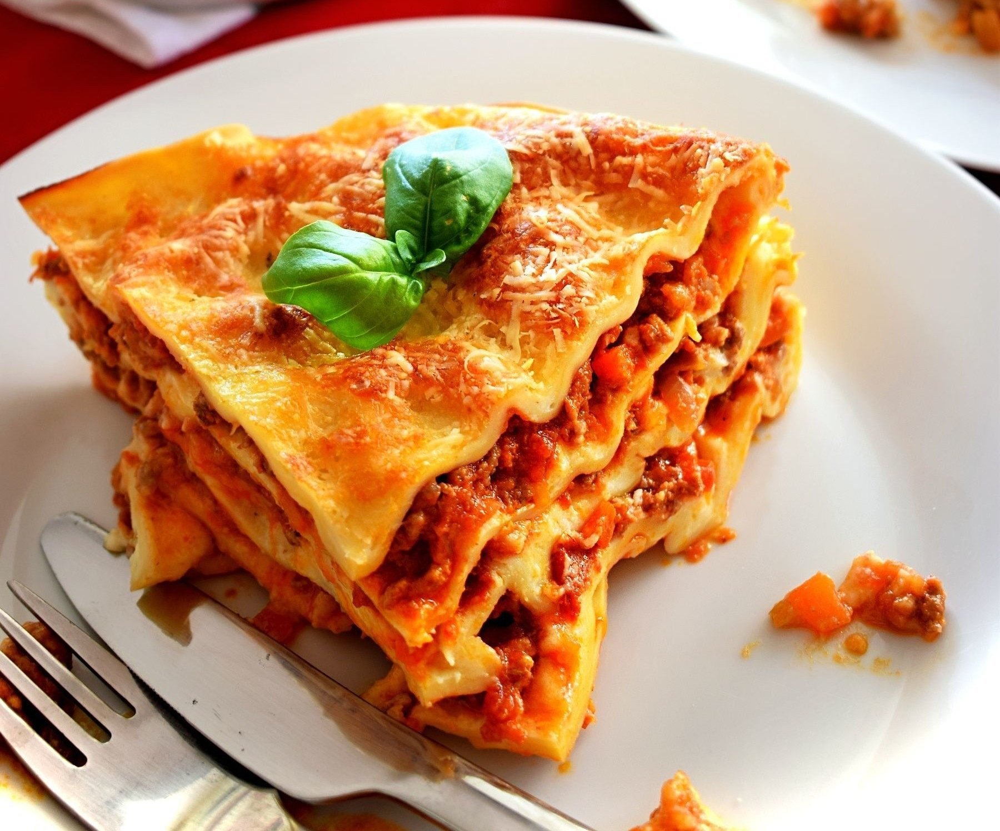

Lasagna

Description
Everyone loves a good lasagna, right? It's a great way to feed a crowd and a perfect dish to bring to a potluck.
It freezes well. It reheats well. Leftovers will keep you happy for days.
Simply Recipes reader Alton Hoover sent me his favorite recipe for lasagna which he has been cooking since his
college days. Alton's original recipe created enough lasagna for a small army so I halved it. What is posted
here will easily serve eight people.
Ingredients
- 1 pound sweet Italian sausage
- 3/4 pound lean ground beef
- 1/2 cup minced onion
- 2 cloves garlic, crushed
- 1 (28 ounce) can crushed tomatoes
- 2 (6 ounce) cans tomato paste
- 2 (6.5 ounce) cans canned tomato sauce
- 1/2 cup water
- dried basil leaves
- 2 tablespoons sugar
- salt
- black pepper
- lasagne noodles
- beshamel sauce
- mozzarella cheese, sliced
Steps
- In a Dutch oven, cook sausage, ground beef, onion, and garlic over medium heat until well browned. Stir in
crushed tomatoes, tomato paste, tomato sauce, and water. Season with sugar, basil, fennel seeds, Italian
seasoning, 1 teaspoon salt, pepper, and 2 tablespoons parsley. Simmer, covered, for about 1 1/2 hours,
stirring occasionally.
- Bring a large pot of lightly salted water to a boil. Cook lasagna noodles in boiling water for 8 to 10
minutes. Drain noodles, and rinse with cold water.
- Preheat oven to 375 degrees F (190 degrees C).
- To assemble, spread 1 1/2 cups of meat sauce in the bottom of a 9x13-inch baking dish. Arrange 6 noodles
lengthwise over meat sauce. Spread with one half of the beschamel sauce. Top with a third of mozzarella
cheese slices. Spoon 1 1/2 cups meat sauce over mozzarella. Repeat layers, and top with remaining
mozzarella. Cover with foil: to prevent sticking, either spray foil with cooking spray, or make sure the
foil does not touch the cheese.
- Bake in preheated oven for 25 minutes. Remove foil, and bake an additional 25 minutes. Cool for 15 minutes
before serving.